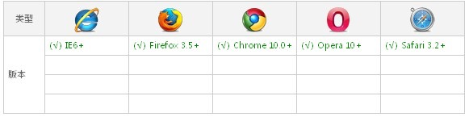

几个您需要知道的概念
@font-face: 是css3中允许使用自定义字体的一个模块,他主要是把自己定义的Web字体嵌入到你的网页中,看到了CSS3属性是不是会疑问那古老的IE会出现兼容问，见下图兼容状况。

.ttf(TrueType):Apple公司和Microsoft公司共同推出的字体文件格式，是最常用的一种字体文件表示方式，是一种RAW格式,支持这种字体的浏览器有【IE9+,Firefox3.5+,Chrome4+,Safari3+,Opera10+,iOS Mobile Safari4.2+】；
.otf(OpenType):OpenType也叫Type 2字体，是由Microsoft和Adobe公司开发的另外一种字体格式。它也是一种轮廓字体，比TrueType更为强大，最明显的一个好处就是可以在把PostScript字体嵌入到TrueType的软件中,支持这种字体的浏览器有【Firefox3.5+,Chrome4.0+,Safari3.1+,Opera10.0+,iOS Mobile Safari4.2+】；
.woff(Web Open Font Format):Web开放字体格式,是Web字体中最佳格式，他是一个开放的TrueType/OpenType的压缩版本，同时也支持元数据包的分离,支持这种字体的浏览器有【IE9+,Firefox3.5+,Chrome6+,Safari3.6+,Opera11.1+】。
.eot(Embedded Open Type):eot字体是IE专用字体，可以从TrueType创建此格式字体,支持这种字体的浏览器有【IE4+】
.svg(SVG):.svg字体是基于SVG字体渲染的一种格式,支持这种字体的浏览器有【Chrome4+,Safari3.1+,Opera10.0+,iOS Mobile Safari3.2+】
icon font
顾名思义就是用字体的方式来实现icon，主要用到了css3中的@font-face，以前我们的实现方式都是切成图片，然后使用css sprite方式最后用坐标定位的方法来实现。
@font-face
规则首先定义在 CSS2 规范中，但是在 CSS2.1 中被删除，目前又被纳入到 CSS3 推荐草案中，所以不用担心IE系列，从IE4开始就支持这一属性了,其他主流浏览器也都支持见上图。
第一步申明font-face:
@font-face {
font-family: Ratchicons;
font-style: normal;
font-weight: normal;
src: url("../resource/font/ratchicons.eot");
src: url("../resource/font/ratchicons.eot?#iefix") format("embedded-opentype"),
url("../resource/font/ratchicons.woff") format("woff"),
url("../resource/font/ratchicons.ttf") format("truetype"),
url("../resource/font/ratchicons.svg#svgFontName") format("svg");
}
取值说明:
1、font-family:此值指的就是你自定义的字体名称，最好是使用你下载的默认字体，他将被引用到你的Web元素中的font-family。如font-family:”Ratchicons”;
2、font-style和font-weight:这两个值就是大家熟悉的font属性，weight定义字体是否为粗体，style主要定义字体样式。
3、source:此值指的是你自定义的字体的存放路径，可以是相对路径也可以是绝路径；
4、format：此值指的是你自定义的字体的格式，主要用来帮助浏览器识别其值主要几种类型：truetype,opentype,truetype-aat,embedded-opentype,avg等；
第二步:定义iconfont的样式:
.icon {
font-family: Ratchicons;
font-size: 24px;
line-height: 1;
text-decoration: none;
}
第三步：定义相应图标并获取字体编码:
.icon-back:before {
content: '\e80a';
}
关于字体编码如何定义我们将在下一片如何制作iconfont中分享
第四步：使用fonticon:
<span class="icon icon-back"></span>
为什么要用四种字体文呢？
- .eot只用于IE系列；
- .woff在IE9中被支持，并且也支持firefox 3.6+,chrome6+,safari5.1+,opera11.1+；
- .svg主要用于移动设备,支持ios4.1+和android 3.0+,当然除IE系列外其他的最新版本的标准浏览器也都是支持的;
- .ttf是P上支持性最好的一个，但是移动设备不支持。
为了更好的兼容性，通常我们会把四种格式全部引用，见上面font-face实例
一些免费的字库
+阿里巴巴矢量图标库 http://www.iconfont.cn/
+fontello http://fontello.com/
+Font-Awesome http://fortawesome.github.io/Font-Awesome/
+Glyphicon Halflings http://glyphicons.com/
总结
优点:
1、可以有效减少页面的请求，但是对于习惯使用CSS sprite功能的同学来说，这种方法对页面性能的提升不大。
2、相对css sprite的项目场景单一性,iconfont更加通用,具备一次制作重复使用的特性。
3、对于移动终端,可以很方便的兼容多分辨率,配合离线存储效果更佳。
4、众多的免费字库方便你直街选择使用,可以使用CDN
缺点:
只支持纯色icon，最多能在高端浏览器上实现渐变色或图形蒙板。
一点点建议，如果您的项目使纯色的，多个的icon，请大胆的使用iconfont吧，但是如果是彩色的建议您还是继续使用css sprite，如果是单一的icon您就应该使用一个图片。没有所谓的银弹，您应该根据项目的实际性来选择您的技术方案。